import os
import threading
print(f'Python process running with process id: {os.getpid()}')
total_threads = threading.active_count()
thread_name = threading.current_thread().name
print(f'Python is currently running {total_threads} thread(s)')
print(f'The current thread is {thread_name}')Asynchronous Programming with Python
One programming model to rule them all
François-David Collin
CNRS
IMAG
Paul-Valéry Montpellier 3 University
Asynchronous, Basics
What is Asynchronous Programming?
- Asynchronous programming is a programming paradigm that allows the program to continue executing other tasks before the current task is finished.
- It is a way to achieve concurrency in a program.
\Rightarrow it is an abstraction over concurrency, it does not necessarily mean that the program is executed in parallel.
I/O Bound vs. CPU Bound
import requests
response = requests.get('https://www.example.com')
items = response.headers.items()
headers = [f'{key}: {header}' for key, header in items]
formatted_headers = '\n'.join(headers)
with open('headers.txt', 'w') as file:
file.write(formatted_headers)- 1
- I/O-bound web request
- 2
- CPU-bound response processing
- 3
- CPU-bound string concatenation
- 4
- I/O-bound write to disk
Concurrency, parallelism and multitasking
We will use extensively the bakery metaphor.
Concurrency vs. Parallelism
One baker and two cakes to prepare.
- Can preheat the oven while preparing the first cake.
- Can start the second cake while the first one is in the oven.
\Rightarrow Switching between tasks is concurrency (or concurrent behavior).
Two bakers and two cakes to prepare.
- Can prepare both cakes at the same time.
\Rightarrow Doing multiple tasks in parallel is parallelism (or parallel behavior).
Concurrency vs. Parallelism (2)
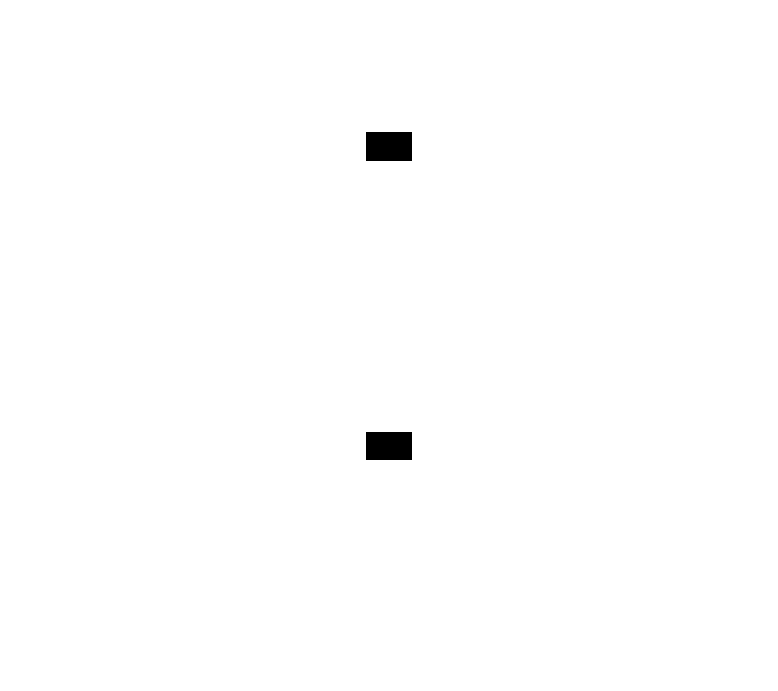With concurrency, we have multiple tasks happening at the same time, but only one we’re actively doing at a given point in time. With parallelism, we have multiple tasks happening and are actively doing more than one simultaneously.
From Fowler (2022)
Concurrency vs. Parallelism (3)
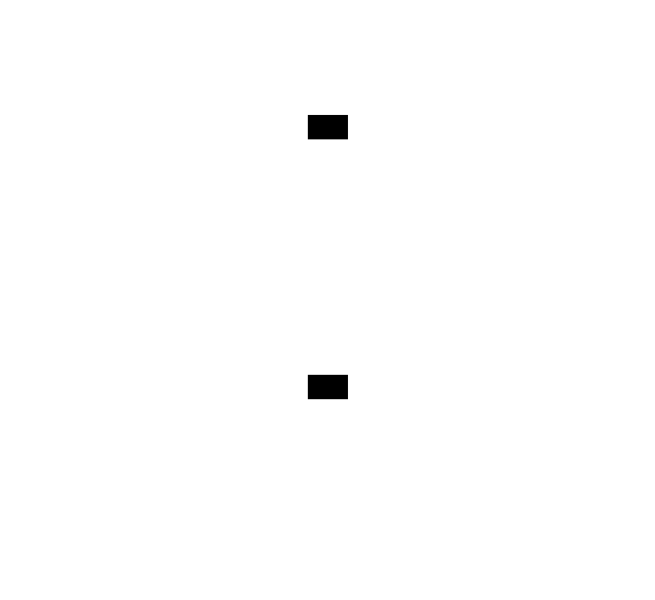With concurrency, we switch between running two applications. With parallelism, we actively run two applications simultaneously.
From Fowler (2022)
Concurrency vs. Parallelism (4)
- Concurrency is about multiple independent tasks that can happen.
- Parallelism is concurrency AND simultaneous execution.
While parallelism implies concurrency, concurrency does not always imply parallelism.
\Rightarrow Concurrency is a broader concept than parallelism.
Multitasking
Preemptive multitasking
- The operating system decides when to switch between tasks.
- The tasks are not aware of each other.
Cooperative multitasking
- In this model we have to explicitly to decide when to switch between tasks.
- The tasks are aware of each other.
Benefits of cooperative multitasking
- Less overhead than preemptive multitasking.
- Granular/optimal control over when to switch between tasks.
Processes, threads, multithreading, and multiprocessing
Multi-processing vs Multi-threading


Processes and threads
Python process running with process id: 89280
Python is currently running 8 thread(s)
The current thread is MainThreadCreating processes
Hello from parent process 89280
Hello from child process 89329!Creating threads
import threading
def hello_from_thread():
print(f'Hello from thread {threading.current_thread()}!')
hello_thread = threading.Thread(target=hello_from_thread)
hello_thread.start()
total_threads = threading.active_count()
thread_name = threading.current_thread().name
print(f'Python is currently running {total_threads} thread(s)')
print(f'The current thread is {thread_name}')
hello_thread.join()Hello from thread <Thread(Thread-6 (hello_from_thread), started 6226817024)>!Python is currently running 9 thread(s)
The current thread is MainThread
And all hell broke loose: the GIL
What about Python?
- Designed for sequential and single-core architecture from the beginning
- Everything is interpreted
- All dynamic (no static types)
The GIL
Aka Global Interpreter Lock
- The GIL allows thread usage, you can create threads and launch them: YES!
- but…
- Only ONE thread can actually execute code at python level..
Multi-threaded != Parallel execution
Multi-threading doesn’t guarantee parallel execution…

\Longrightarrow Python seems to have started off with the wrong foot by a long way…
High performance Python 😬
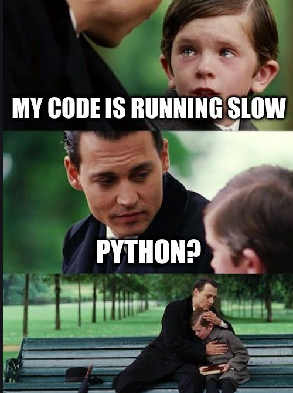
But wait!
Actually we can run (real) parallel programs with the
multiprocessingpackage.\Rightarrow But this is an “OS level” multiprocessing, with associated huge overhead (relatively)
Python actually releases the GIL when executing everything that is not Python code (e.g. C/C++ extensions and libraries)
\Rightarrow It means we can parallelize our code by using I/O bound and CPU bound libraries that release the GIL (this is the case for most of them)
Single-threaded asynchronous programming with asyncio
Socket
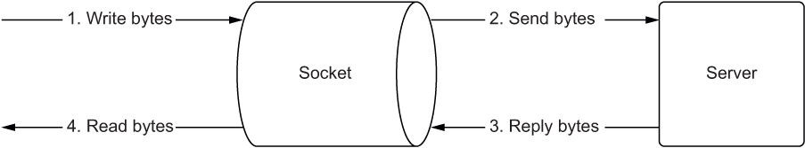Writing bytes to a socket and reading bytes from a socket
From Fowler (2022)
- This a mailbox metaphor
- By default, the socket is blocking, i.e. the program will wait until the socket is ready to be read or written.
- We can make the socket non-blocking, i.e. the program will not wait for the socket to be ready to be read or written. \Rightarrow Later on, the OS will tell us we received byte and we deal with it.
Socket (2)
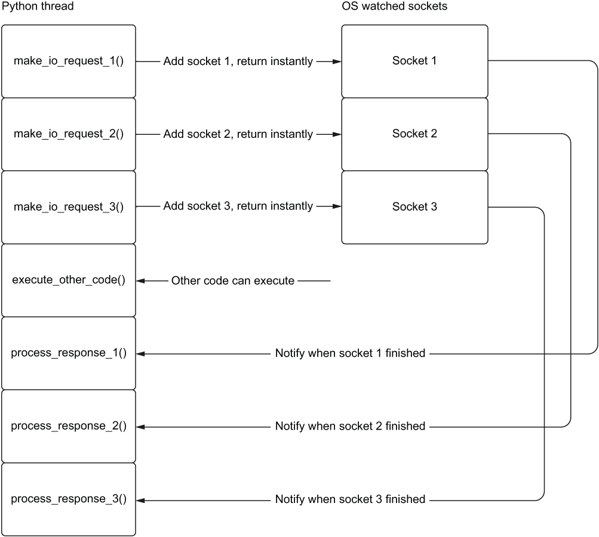
- Making a non-blocking I/O request returns immediately
- tells the O/S to watch sockets for data \Rightarrow This allows execute_other_code() to run right away instead of waiting for the I/O requests to finish
- Later, we can be alerted when I/O is complete and process the response.
From Fowler (2022)
Event Loop
- The event loop is a loop that runs forever.
- It checks if there are any messages to process.
- If there are, it processes them.
- If there are not, it waits for messages to arrive.
\Rightarrow In asyncio, the event loop is queue of tasks instead of messages, Tasks are wrapped coroutines.
Event Loop (2)
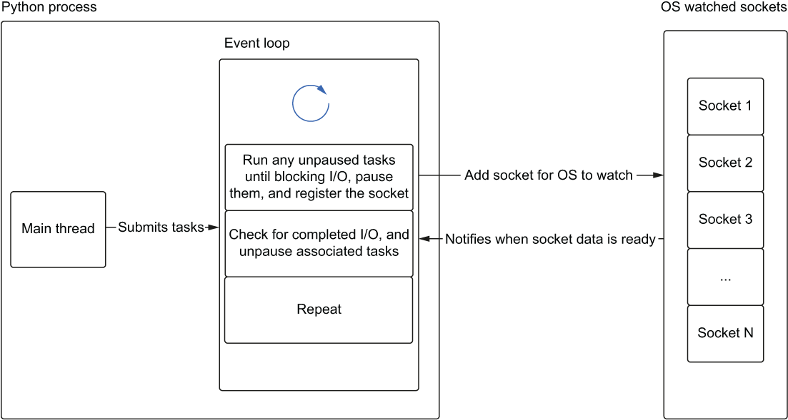Event Loop (3)
Event Loop (4)
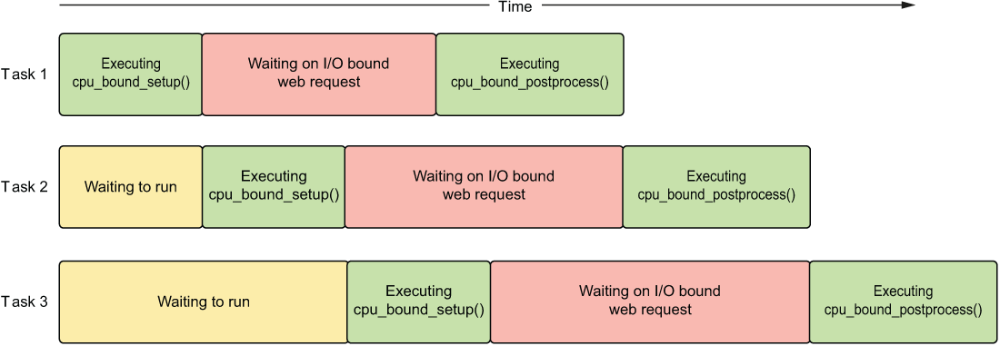asyncio Coroutines
To define a coroutine, we use the async def syntax.
What is it?
async def coroutine_add_one(number: int) -> int:
return number + 1
def add_one(number: int) -> int:
return number + 1
function_result = add_one(1)
coroutine_result = coroutine_add_one(1)
print(f'Function result is {function_result}\n\
and the type is {type(function_result)}')
print(f'Coroutine result is {coroutine_result}\n\
and the type is {type(coroutine_result)}')- 1
- function call, is executed immediately.
- 2
- coroutine call, is not executed at all, but returns a coroutine object.
Function result is 2
and the type is <class 'int'>
Coroutine result is <coroutine object coroutine_add_one at 0x121356440>
and the type is <class 'coroutine'>From Fowler (2022)
How to execute a coroutine?
You need an event loop.
import asyncio
async def coroutine_add_one(number: int) -> int:
return number + 1
result = asyncio.run(coroutine_add_one(1))
print(result)- 1
- This launches the event loop, executes the coroutine, and returns the result.
How to execute a coroutine? (2)
await keyword
- 1
-
Pause, and wait for the result of
add_one(1). - 2
-
Pause, and wait for the result of
add_one(2). - 3
-
Pause, and wait for the result of
main(). (outside of a Jupyter notebook, you have to launch the event loop somewhere, likeasyncio.run(main())instead ofawait main())
2
3await keyword (2)
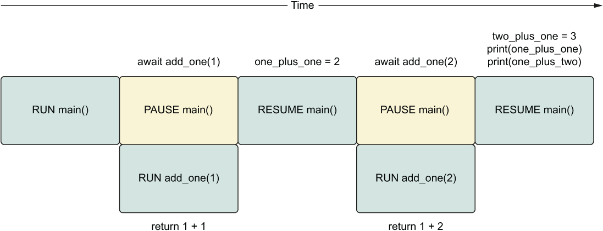From Fowler (2022)
Simulating the real thing with asyncio.sleep
import asyncio
async def hello_world_message() -> str:
await asyncio.sleep(1)
return 'Hello World!'
async def main() -> None:
message = await hello_world_message()
print(message)
await main()- 1
-
Pause
hello_world_messagefor 1 second. - 2
-
Pause
mainuntilhello_world_messageis finished.
Hello World!Utility function delay(seconds)
import asyncio
async def delay(delay_seconds: int) -> int:
print(f'sleeping for {delay_seconds} second(s)')
await asyncio.sleep(delay_seconds)
print(f'finished sleeping for {delay_seconds} second(s)')
return delay_seconds- 1
- Takes an integer of the duration in seconds that we’d like the function to sleep.
- 2
- Prints when sleep begins and ends.
- 3
- Returns that integer to the caller once it has finished sleeping.
Running two coroutines
import asyncio
async def add_one(number: int) -> int:
return number + 1
async def hello_world_message() -> str:
await delay(1)
return 'Hello World!'
async def main() -> None:
message = await hello_world_message()
one_plus_one = await add_one(1)
print(one_plus_one)
print(message)
await main()- 1
-
Pause
mainuntilhello_world_messageis finished. - 2
-
Pause
mainuntiladd_oneis finished.
sleeping for 1 second(s)
finished sleeping for 1 second(s)
2
Hello World!Running two coroutines (2)
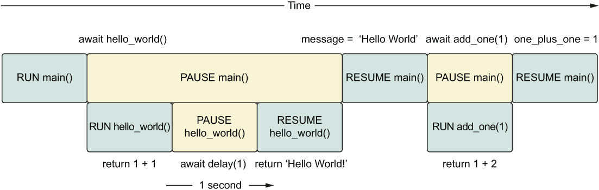From Fowler (2022)
What to do next?
Moving away from sequential execution and run add_one and hello_world_message concurrently.
For that we need…
Tasks
So far we just learned how to create coroutines and put then in the event loop.
Tasks are a way to schedule coroutines concurrently.
\Rightarrow Tasks are wrapped coroutines which are scheduled to run in the event loop as soon as possible.
Creating tasks
<class '_asyncio.Task'>
sleeping for 3 second(s)
finished sleeping for 3 second(s)
3- the coroutine is scheduled to run in the event loop as soon as possible.
- before, it was just run at the await statement (pausing the caller).
Running tasks concurrently
sleeping for 3 second(s)
sleeping for 3 second(s)
sleeping for 3 second(s)
finished sleeping for 3 second(s)
finished sleeping for 3 second(s)
finished sleeping for 3 second(s)Running tasks concurrently (2)
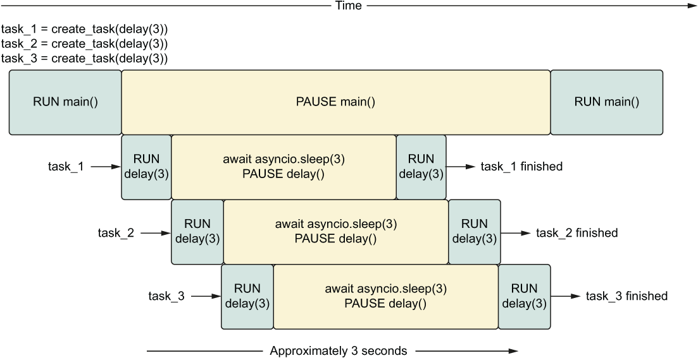From Fowler (2022)
Running tasks concurrently (3)
import asyncio
async def hello_every_second():
for i in range(2):
await asyncio.sleep(1)
print("I'm running other code while I'm waiting!")
async def main():
first_delay = asyncio.create_task(delay(3))
second_delay = asyncio.create_task(delay(3))
await hello_every_second()
await first_delay
await second_delay
await main()sleeping for 3 second(s)
sleeping for 3 second(s)
I'm running other code while I'm waiting!
I'm running other code while I'm waiting!
finished sleeping for 3 second(s)
finished sleeping for 3 second(s)Running tasks concurrently (4)
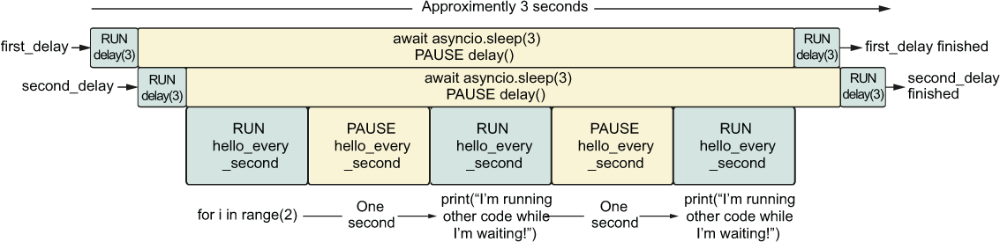From Fowler (2022)
Canceling tasks
import asyncio
from asyncio import CancelledError
async def main():
long_task = asyncio.create_task(delay(10))
seconds_elapsed = 0
while not long_task.done():
print('Task not finished, checking again in a second.')
await asyncio.sleep(1)
seconds_elapsed = seconds_elapsed + 1
if seconds_elapsed == 5:
long_task.cancel()
try:
await long_task
except CancelledError:
print('Our task was cancelled')
await main()Task not finished, checking again in a second.
sleeping for 10 second(s)
Task not finished, checking again in a second.
Task not finished, checking again in a second.
Task not finished, checking again in a second.
Task not finished, checking again in a second.
Task not finished, checking again in a second.
Our task was cancelledSetting a timeout
sleeping for 2 second(s)
Got a timeout!
Was the task cancelled? TrueTasks, coroutines, futures, and awaitables
Introducing futures
Is my_future done? False
Is my_future done? True
What is the result of my_future? 42Awaiting futures
from asyncio import Future
import asyncio
def make_request() -> Future:
future = Future()
asyncio.create_task(set_future_value(future))
return future
async def set_future_value(future) -> None:
await asyncio.sleep(1)
future.set_result(42)
async def main():
future = make_request()
print(f'Is the future done? {future.done()}')
value = await future
print(f'Is the future done? {future.done()}')
print(value)
await main()- 1
- Create a task to asynchronously set the value of the future.
- 2
- Wait 1 second before setting the value of the future.
- 3
- Pause main until the future’s value is set.
Is the future done? False
Is the future done? True
42Comparing tasks, coroutines, futures, and awaitables
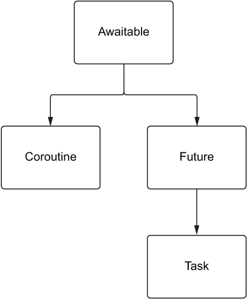
- Awaitables
- Objects that can be awaited in an async function, including coroutines, tasks, and futures.
- Coroutines
-
Special functions that can be paused and resumed later, defined using
async def, and can be awaited to allow other coroutines to run. - Futures
- Represent the result of an asynchronous operation, manage its state, and can be awaited to get the result.
- Tasks
- Schedule and run coroutines concurrently, and can be used to cancel or check their status.
Benchmarking
With a decorator
import functools
import time
from typing import Callable, Any
def async_timed():
def wrapper(func: Callable) -> Callable:
@functools.wraps(func)
async def wrapped(*args, **kwargs) -> Any:
print(f'starting {func} with args {args} {kwargs}')
start = time.time()
try:
return await func(*args, **kwargs)
finally:
end = time.time()
total = end - start
print(f'finished {func} in {total:.4f} second(s)')
return wrapped
return wrapperOfficial Python documentation for decorators
- add functionality to an existing function
- without modifying the function itself
- it intercepts the function call and runs “decorated” code before and after it
Using it
import asyncio
@async_timed()
async def delay(delay_seconds: int) -> int:
print(f'sleeping for {delay_seconds} second(s)')
await asyncio.sleep(delay_seconds)
print(f'finished sleeping for {delay_seconds} second(s)')
return delay_seconds
@async_timed()
async def main():
task_one = asyncio.create_task(delay(2))
task_two = asyncio.create_task(delay(3))
await task_one
await task_two
await main()starting <function main at 0x1213b5120> with args () {}
starting <function delay at 0x1213b47c0> with args (2,) {}
sleeping for 2 second(s)
starting <function delay at 0x1213b47c0> with args (3,) {}
sleeping for 3 second(s)
finished sleeping for 2 second(s)
finished <function delay at 0x1213b47c0> in 2.0011 second(s)
finished sleeping for 3 second(s)
finished <function delay at 0x1213b47c0> in 3.0013 second(s)
finished <function main at 0x1213b5120> in 3.0016 second(s)asyncio.gather
asyncio.gather() runs multiple asynchronous operations, wraps a coroutine as a task, and returns a list of results in the same order of awaitables.
asyncio.gather (2)
Caution
asyncio.gather takes a tuple of awaitables, not a list of awaitables, but returns a list of results in the same order of awaitables.
If you want to pass a list, use the * operator to unpack it as a tuple.
Pitfalls of asynchronous programming
Running CPU-bound code
import asyncio
@async_timed()
async def cpu_bound_work() -> int:
counter = 0
for i in range(100000000):
counter = counter + 1
return counter
@async_timed()
async def main():
task_one = asyncio.create_task(cpu_bound_work())
task_two = asyncio.create_task(cpu_bound_work())
await task_one
await task_two
await main()starting <function main at 0x1213b5940> with args () {}
starting <function cpu_bound_work at 0x1213b5760> with args () {}
finished <function cpu_bound_work at 0x1213b5760> in 1.2570 second(s)
starting <function cpu_bound_work at 0x1213b5760> with args () {}
finished <function cpu_bound_work at 0x1213b5760> in 1.2420 second(s)
finished <function main at 0x1213b5940> in 2.4994 second(s)Running blocking APIs
import asyncio
import requests
@async_timed()
async def get_example_status() -> int:
return requests.get('http://www.example.com').status_code
@async_timed()
async def main():
task_1 = asyncio.create_task(get_example_status())
task_2 = asyncio.create_task(get_example_status())
task_3 = asyncio.create_task(get_example_status())
await task_1
await task_2
await task_3
await main()starting <function main at 0x121a04400> with args () {}
starting <function get_example_status at 0x1213b56c0> with args () {}
finished <function get_example_status at 0x1213b56c0> in 0.1187 second(s)
starting <function get_example_status at 0x1213b56c0> with args () {}
finished <function get_example_status at 0x1213b56c0> in 0.0649 second(s)
starting <function get_example_status at 0x1213b56c0> with args () {}
finished <function get_example_status at 0x1213b56c0> in 0.0680 second(s)
finished <function main at 0x121a04400> in 0.2522 second(s)Asynchronous threading
Example of blocking code
Thread Pool
import time
import requests
from concurrent.futures import ThreadPoolExecutor
def get_status_code(url: str) -> int:
response = requests.get(url)
return response.status_code
start = time.time()
with ThreadPoolExecutor() as pool:
urls = ['https://www.example.com' for _ in range(10)]
results = pool.map(get_status_code, urls)
for result in results:
# print(result)
pass
end = time.time()
print(f'finished requests in {end - start:.4f} second(s)')finished requests in 0.8679 second(s)Compare with sequential code
finished requests in 1.4278 second(s)Thread pool with asyncio
import functools
import requests
import asyncio
from concurrent.futures import ThreadPoolExecutor
def get_status_code(url: str) -> int:
response = requests.get(url)
return response.status_code
@async_timed()
async def main():
loop = asyncio.get_running_loop()
with ThreadPoolExecutor() as pool:
urls = ['https://www.example.com' for _ in range(10)]
tasks = [loop.run_in_executor(pool, functools.partial(get_status_code, url)) for url in urls]
results = await asyncio.gather(*tasks)
print(results)
await main()starting <function main at 0x1213b5940> with args () {}
[200, 200, 200, 200, 200, 200, 200, 200, 200, 200]
finished <function main at 0x1213b5940> in 0.8599 second(s)Multithreading with numpy
Let’s define a big matrix on which we will compute the mean of each row.
Multithreading with numpy (2)
Now process the matrix sequentially.
0.30220913887023926Multithreading with numpy (3)
And then the same with multithreading (we check that the results are exactly the same).
import functools
from concurrent.futures.thread import ThreadPoolExecutor
import asyncio
def mean_for_row(arr, row):
return np.mean(arr[row])
@async_timed()
async def main():
loop = asyncio.get_running_loop()
with ThreadPoolExecutor() as pool:
tasks = []
for i in range(rows):
mean = functools.partial(mean_for_row, matrix, i)
tasks.append(loop.run_in_executor(pool, mean))
return await asyncio.gather(*tasks)
res_threads = np.array(await main())
np.testing.assert_array_equal(res_seq, res_threads)starting <function main at 0x121a05580> with args () {}
finished <function main at 0x121a05580> in 0.0163 second(s)Conclusion
Everything is
awaitable(coroutines, futures, tasks), i.e. can be simply run withawait.a task is a coroutine wrapped in a future, and scheduled to run in the event loop.
asynciois a single-threaded asynchronous programming library, providing a simple way to write concurrent code for I/O bound tasks.\Rightarrow We’ll see later that this programming model can be used for parallelism as well, and very easily.
References
Fowler, M. 2022. Python Concurrency with Asyncio. Manning. https://www.manning.com/books/python-concurrency-with-asyncio.

Asynchronous Programming with PythonAdvanced Programming and Parallel Computing, Master 2 MIASHS